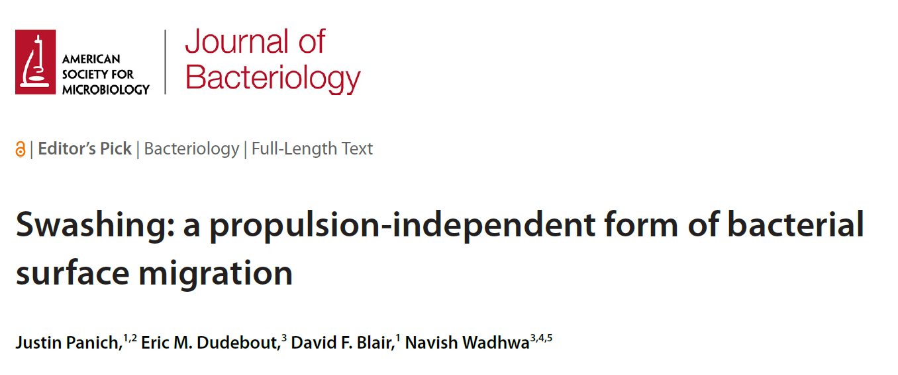

Propulsion without propellers: how bacteria move on surfaces without flagella
Navish Wadhwa
Arizona State University
@WadhwaLab

Physical forces influence bacterial motility

E. coli swimming in liquid
In liquid, flagellar hydrodynamics govern motility
 Slowed down 20X
Slowed down 20X

On surfaces, the situation is more complicated


Physical forces influence bacterial migration on surfaces


What is the relative importance of these physical factors?
Flagellar propulsion is not required for surface migration


Flagellar propulsion is not required for surface migration


Flagellar propulsion aids bacterial surface expansion, but is not required

Surface expansion of filament-less E. coli
Surfactant addition helps WT expansion

E. coli WT swarming at 10 h
But it hinders swashing

E. coli ∆flgK swashing at 13 h
Swashing requires fermentation of sugars


Swashing cells acidify the media


Swashing cells acidify the media

Topography of a swashing colony


A conceptual model for swashing


Summary
Surface migration in Salmonella and E. coli does not require flagellar propulsion.
Swashing cells ferment sugars to generate osmolytes.
Fluid motion into and out of the colony propels cells outwards.


Panich*, Dudebout*, Blair, and Wadhwa, J. Bacteriology, 2025
Acknowledgements
Wadhwa lab
Dr. Seiga Yanagisawa
Dr. Mrinmayee Bapat
Dr. Farhad Javi
Shabduli Sawant
Eric Dudebout
Carolina Gogerty
Luis Meneses
Brennen Wise
University of Utah
David Blair
Justin Panich